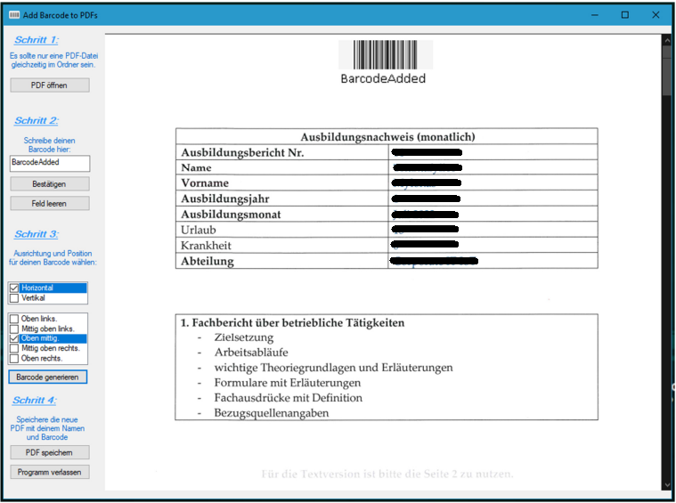
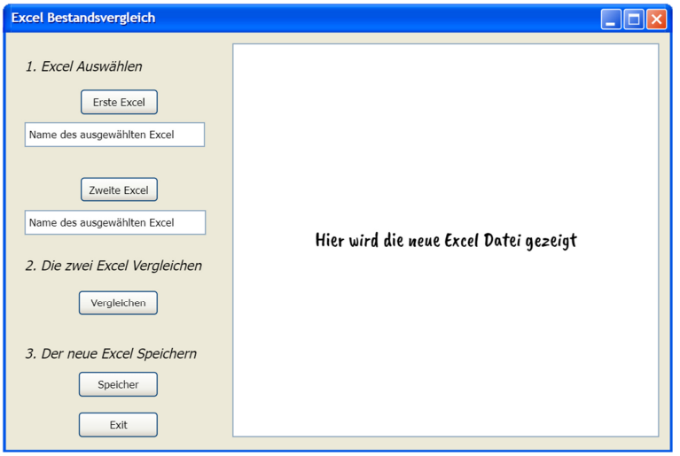

Willkommen auf meiner Portfolio-Website!

seit dem 1. September 2021 tauche ich in die faszinierende Welt der Fachinformatiker als Anwendungsentwicklung ein!
Über mich
Meine Reise in die IT-Welt
Erstes Jahr: Die Welt der Programmierung erobern
Meine Reise in die IT-Welt begann im September 2021 bei der Firma Schnellecke. In den ersten drei Monaten im Service Desk sammelte ich wertvolle Erfahrungen. Im Fokus des ersten Jahres standen die Grundlagen der Programmierung und die Entwicklung einfacher WPF-Anwendungen mit C#. Ein Highlight war die Personalverwaltungsanwendung mit Funktionen wie Hinzufügen, Löschen, Anzeigen, Aktualisieren und Speichern in einer CSV-Datei.
Zweites Jahr: Expansion in die Welt des Webs
Im zweiten Ausbildungsjahr vertiefte ich meine Kenntnisse in der Entwicklung von WPF-Anwendungen mit C# und entwickelte eine Anwendung, die Barcodes dynamisch aus vom Benutzer eingegebenem Text erzeugt. Danach tauchte ich in die Welt der Webentwicklung ein, erlernte HTML, CSS und JavaScript, und nutzte dieses Wissen für mein persönliches Projekt – die Erstellung meiner eigenen Website.
Drittes Jahr: Spannende Erkundung von Java und Spring Boot
Im dritten Jahr spezialisierte ich mich weiter auf Java und Objektorientierte Programmierung (OOP). Ich entwickelte eine Desktop-Anwendung in Java und tauchte intensiv in die Webentwicklung ein. Dabei kamen Technologien wie JPA, Thymeleaf, Bootstrap, Spring Security, Lombok und anderen zum Einsatz. Das Ergebnis waren zwei innovative Webanwendungen, die meine Leidenschaft für die Technologie widerspiegeln.
Fortschritte in der Ausbildung und Ergänzungen in der Schule
Neben der Ausbildung im Betrieb wird mein Weg in die Programmierung durch die Ausbildung in der Berufsschule bereichert. Von der Programmierung in Fachsprachen bis hin zur Analyse von Algorithmen – die Berufsschule hat mir zusätzliche Kenntnisse vermittelt und meine wissenschaftliche Herangehensweise an die Programmierung gestärkt.
Entdecke mehr!
Schau dich gerne um und entdecke mehr über meine Leidenschaft für die Webentwicklung und meine Reise in die Welt der Anwendungsentwicklung!
Meine Arbeit
Im Rahmen meiner Ausbildung habe ich zwei Projekte für das Unternehmen durchgeführt, die ich hier vorstelle, um meine Erfahrungen und Fähigkeiten weiterzugeben. Diese Projekte stellen das geistige Eigentum von Schnellecke Logistics dar.
Add BArcode to PDF
Ein Programm (WPF, C#), das es ermöglicht, Barcodes in PDF-Dokumente einzufügen, ohne dass die Dokumente manuell geändert werden können, wenn der Benutzer die Barcodes eingibt und speichert.
Excel Bestandsvergleich
Ein Programm (Desk-App, Java), das es ermöglicht, zwei Excel-Dateien einfügt und vergleicht. Als nächste ein dritte Excel erstellt, indem nur die unterschiedlichen Daten von die zwei Excel zeigt und kann auch diese speichern.
